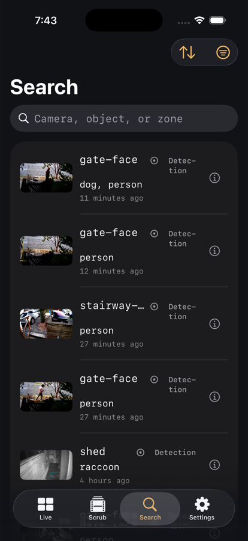

Applies to: iOS and iPadOS 26 / macOS 26.5 / deeper search needs the sidecar
Search and Review
On this page
The Search tab is the review feed: every alert and detection your server recorded, newest first, with a search field over the top.

The feed
One list, no tabs. Each row carries a thumbnail, the camera, the objects detected, how long ago it was, its severity, and an i button that opens the event detail page. From there you can play the clip, see the object tracks, and open Investigate.
Filters
The filter button opens:
- Time range: how far back to look. The default lookback is a year, deliberately, because Frigate's own review endpoint quietly floors an unspecified query at about a day and would otherwise hide your history.
- Severity: alerts, detections, or both.
- Cameras: filtered on the server when you pick exactly one, on the device otherwise.
- Objects and Zones: these are filtered on the device, because Frigate's review endpoint cannot filter by object or zone. Loading may take a few more requests as a result.
- Sort, and Clear all.
The filter button fills in when a filter is active. Search text and sort order do not count toward that, since they are visible on screen anyway.
Searching
Typing in the field searches immediately and entirely on your device, against the camera name, the detected objects, any sub-label (a recognised face or plate), and the zones. Nothing is sent anywhere and nothing is saved. A Did you mean chip offers a correction when your query looks like a typo.
Deeper search
If the instant results do not have it, the feed offers Deeper search for "your query" with the note that it searches the footage itself. This escalates in two stages:
- The sidecar's structured search, which is fast.
- Frigate's own semantic search over the recorded footage, which takes a few seconds because it is comparing embeddings rather than matching text.
That second stage is what finds "person carrying a box" when no label says so.
Recognised names
Where Frigate has a sub-label for an object, a recognised face or a read licence plate, Elsinore shows that name on the row, on the dossier card, and on the event detail page.
The app only displays those names. Naming face clusters, merging them, and excluding bad sightings all happen in the sidecar's own web interface, not in the app. See the sidecar's guide.